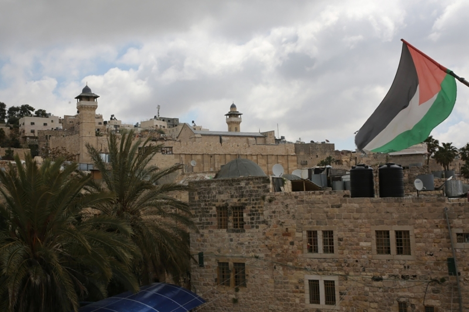

<link rel="stylesheet" href="Main Page.css">
<section>
    <h1>General Info</h1>
    <p>
        Here comes the Introduction <br>
        Established Date goes here <br>
        History is here <br>
        Awards <br>
        Management Hierarchy heeere <br>
    </p>
</section>

<section>
    <h1>Hebron City</h1>
    <p>
        Population: Hebron Governorate has a population of 782,227. As a city, Hebron has a 215,452 people.<br>
        Location: Southern West Bank, 30 km south of Jerusalem. <br>
        Weather: In Hebron, the summers are long, warm, arid, and clear and the winters are cold and mostly clear.<br>
        Over the course of the year, the temperature typically varies from 3°C to 29°C and is rarely below 0°C or above 32°C.<br>
        Places: It has the famous Ibrahimi Mosque.<br>
        Products: Glass industry and Ceramics.<br><br>
        <a href="https://info.wafa.ps/ar_page.aspx?id=3286" target="_blank"></a>

    </p>
</section>

<section>
    <h1>Business Activites</h1>
    <ul class="actList">
        <li>Act 1 </li>
        <li>Act 2</li>
        <li>Act 3</li>
    </ul>

</section>